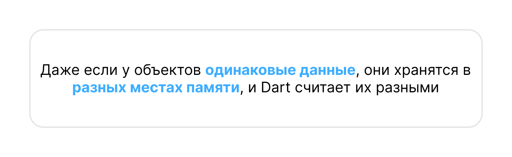

Копирование значений и ссылочная модель
Типы хранения данных
В языке Dart есть два способа хранения данных:
Простые(примитивные) типы передаютсяпо значениюОбъектыпередаютсяпо ссылке
Простые типы в Dart — это:
int, double, bool, String, num
enum (перечисления, о них поговорим позже)
Копирование простых данных
Когда ты присваиваешь значение одной переменной в другую, создаётся копия данных.
Оригинальная переменная не изменяется.
Каждая переменная хранит своё значение отдельно!
Dart - Копирование по значению


void main() {
int a = 10;
int b = a; // b получает КОПИЮ значения a
print("a = $a, b = $b"); // a = 10, b = 10
b = 20; // Изменяем b, но a не трогается
print("a = $a, b = $b"); // a = 10, b = 20
}
Как работают ссылки в объектах?
Объекты (например, List, Map, Set, class) не копируются, а передаются по ссылке.
Это значит, что если одна переменная изменит объект, то изменения отразятся на всех переменных, которые ссылаются на этот объект.
Пример с List (списками)
Объект изменяется, потому что обе переменные указывают на одну область памяти!
Dart - Передача по ссылке (List)
void main() {
List<int> list1 = [1, 2, 3];
List<int> list2 = list1; // list2 получает ссылку на тот же объект!
print("list1 = $list1, list2 = $list2"); // [1, 2, 3], [1, 2, 3]
list2[0] = 42; // Меняем элемент через list2
print("list1 = $list1, list2 = $list2"); // [42, 2, 3], [42, 2, 3]
}
Сравнение своих объектов
Dart - Ссылки на один объект
class Player {
String name;
Player(this.name);
}
void main() {
Player p1 = Player("Игрок");
Player p2 = p1;
p2.name = "Новый Игрок";
print(p1.name); // "Новый Игрок"
print(p2.name); // "Новый Игрок"
// Значния не копируются
// p1 и p2 ссылаются на один и тот же объект в памяти
}
Dart - Ссылки на разные объекты
class Player {
String name;
Player(this.name);
}
void main() {
Player p1 = Player("Игрок");
Player p2 = Player("Игрок");
print(p1 == p2); // false (разные объекты в памяти)
// Или воспользоваться методом identical
print(identical(p1, p2)); // false (разные объекты в памяти)
}

Даже если у объектов одинаковые данные (name), они хранятся в разных местах памяти, и Dart считает их разными.
Как сравнить объекты по содержимому?
Чтобы сравнить объекты по их полям, нужно переопределить метод operator == и хеш-функцию hashCode.
- Каждый объект в Dart автоматически предоставляет целочисленный хэш-код
- Однако его можно переопределить, чтобы сгенерировать собственный
- Если это сделать, нужно обязательно переопределить и оператор ==
- Равные объекты (==) должны иметь одинаковые хэш-коды
Dart - Переопределение == и hashCode
class Player {
String name;
Player(this.name);
@override
bool operator ==(Object other) {
if (identical(this, other)) return true;
return other is Player && other.name == name;
}
// Переопределение hashCode используя алгоритм из книги "Effective Java"
@override
int get hashCode {
int result = 17;
return 37 * result + name.hashCode;
}
}
void main() {
Player p1 = Player("Игрок");
Player p2 = Player("Игрок");
print(p1 == p2); // true (сравниваем по имени)
}
- В Dart нет
===, но естьidentical(a, b), который делает то же самое identical(a, b)проверяет,указывают ли две переменные на один и тот же объект в памяти.==можно переопределить
Константные конструкторы (const)
Обычные объекты создаются каждый раз заново, но константные объекты с одинаковыми значениями могут переиспользоваться.
- Константные объекты хранятся в специальной памяти и не дублируются.
- Если объект неизменяемый, его выгодно делать const для экономии памяти.
Обычный конструктор
Dart - Обычный конструктор
class Point {
int x, y;
Point(this.x, this.y);
}
void main() {
var p1 = Point(10, 20);
var p2 = Point(10, 20);
print(identical(p1, p2)); // false (разные объекты в памяти)
}
Константный конструктор
Dart - Константный конструктор
class Point {
// 👉 Свойства обязательно final
final int x, y;
// 👉 Добавляем перед конструктором const
const Point(this.x, this.y);
}
void main() {
var p1 = const Point(10, 20);
var p2 = const Point(10, 20);
print(identical(p1, p2)); // true (один объект на всю программу!)
}
Стек (Stack) и Куча (Heap)
В Стек попадают все простые типы данных: числа, функции, и т.п.
Здесь компилятору понятно, сколько места он занимает, сколько использует памяти и работает очень шустро
Куча — это огромная область памяти, в которой можно создать объекты.
Доступ в эту память имеется по всему приложению.
Она работает медленнее + накладные расходы на работу "Сборщика Мусора"
В случае с простыми типами данных переменные копируются.
В случае с объектами работает ссылочная модель данных.
Stack (Стек) — для простых типов
Быстрая память, предназначенная для временных данных (локальных переменных).
Тут хранятся:
int, double, bool, String, enum
Локальные переменные внутри функций
Как это работает?
- Когда функция вызывается, все её переменные попадают в Stack.
- Когда функция завершает работу, данные удаляются из Stack.
- Быстро, но мало памяти.
Dart - Работа со стеком
void myFunction() {
int a = 10; // Хранится в Stack
double b = 20.5; // Хранится в Stack
print(a + b);
}
void main() {
myFunction(); // После выполнения данные a и b удалятся
}
Простые переменные живут только внутри своей функции, а потом исчезают.
Heap (Куча) — для объектов
Большая память для хранения объектов
Тут хранятся:
Все объекты (class, List, Map, Set)
Данные, которые живут дольше функции
- Объект хранится в
Heap, а переменныеp1иp2ссылаются на него! - Если объект больше
не используется, Dart удаляет его из памяти (Сборщик Мусора)
Dart - Работа с кучей
class Player {
String name;
Player(this.name);
}
void main() {
Player p1 = Player("Игрок 1");
Player p2 = p1;
p2.name = "Изменённый Игрок";
print(p1.name); // "Изменённый Игрок" (оба указывают на один объект!)
}
Что такое static и где оно используется?
static - относится ко всему классу, а не к конкретному объекту
- Обычные свойства и методы принадлежат конкретному объекту класса.
staticcвойства и методы принадлежатвсему классу, а не его экземпляру.
Где используется static?
- Для хранения глобальных данных (например, констант)
- Для счётчиков, логики работы со всеми объектами класса
- Для утилитных методов, которые не зависят от конкретного объекта
Например, можно посчитать сколько объектов определенного класса было создано
Dart - Статические свойства
class Character {
String name;
int hp;
static int count = 0;
Character(this.name, this.hp) {
count++;
}
}
void main() {
Character knight = Character("Воин", 100);
Character mage = Character("Маг", 80);
Character paladin = Character("Паладин", 120);
// Выводит общее количество созданных персонажей
// static вызывается у самого класса!
// объект создавать не нужно!
print(Character.count);
}
Перечисления Enum
Перечисления enum создаёт фиксированные наборы значений, удобные для работы со статусами, направлениями и режимами.
Используются, когда есть фиксированный список возможных значений:
- Направления (
север,юг,запад,восток) - Дни недели (
понедельник,вторник, …) - Статусы (
loading,success,error)
Например, мы часто будем работать с состоянием во Flutter Приложениях, используя статусы:
Dart - Enum
enum Status { loading, success, error }
void checkStatus(Status status) {
switch (status) {
case Status.loading:
print("Загружается...");
break;
case Status.success:
print("Успешно!");
break;
case Status.error:
print("Ошибка!");
break;
}
}
void main() {
checkStatus(Status.loading); // Загружается...
checkStatus(Status.success); // Успешно!
}